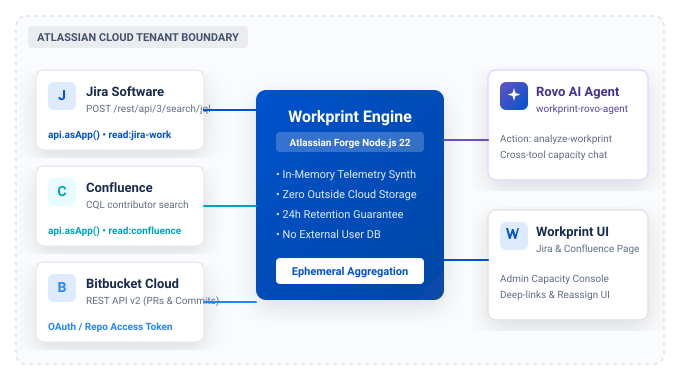

Software engineering is inherently multi-modal. A developer doesn't simply complete tickets in Jira; they review hundreds of lines of code in Bitbucket, author architecture decision records (ADRs) in Confluence, and participate in incident debriefs.
Yet, conventional agile reporting toolchains measure only the Jira board. When senior engineers spend 15 hours a week unblocking teammates on pull requests, Jira marks them as having "surplus bandwidth," leading to chronic overcommitment and sprint burnout.
Workprint bridges this gap by calculating cross-product contribution telemetry into a unified 40-hour weekly sprint capacity model.
Assigned tasks, in-progress sprint tickets, remaining estimate seconds, and worklogs.
Open pull request reviews, designated review obligations, and turnaround lag.
Active technical documentation, sprint planning docs, and RFC specifications under authoring.
Serverless Node.js 22 runtime sandbox with strict tenant isolation, ephemeral in-memory processing, and zero outside-cloud database storage.

Workprint queries Jira and Confluence REST APIs using Forge's sanctioned api.asApp() SDK. Authorization checks and data scopes are enforced natively by Atlassian Cloud.
The workprint-rovo-agent connects to the analyze-workprint action, giving team members conversational capacity intelligence in Atlassian Rovo without context switching.
Workprint does not copy, store, or cache user references beyond 24 hours outside Atlassian Cloud. All calculations execute ephemerally in RAM during active requests.
Workprint is designed to satisfy the rigorous security standards of enterprise Atlassian Cloud administrators, infosec teams, and app evaluators. We undergo continuous validation against the Atlassian Forge Security Checklist.
Full support for user data rights, real-time sync with Jira account anonymization, and self-service CSV data export.
Prohibits arbitrary script injection and enforces strict iframe sandbox isolation.
External egress is confined exclusively to https://api.bitbucket.org. No analytics beacons.
Publicly accessible support channels, complete Privacy Policy, and transparent Terms of Service.